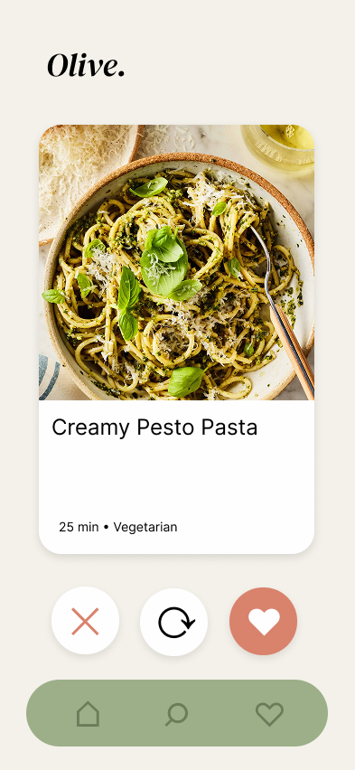
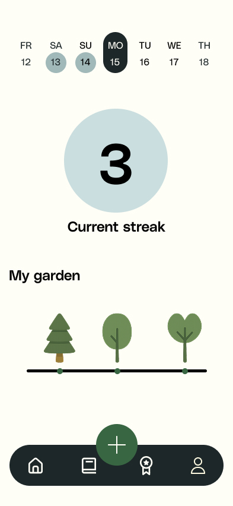
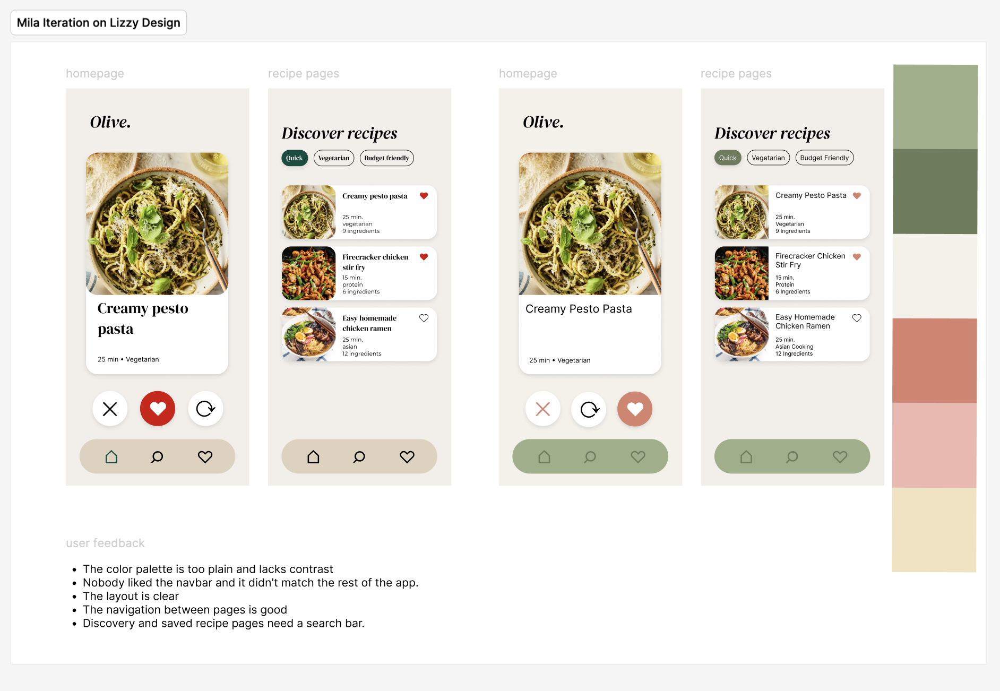
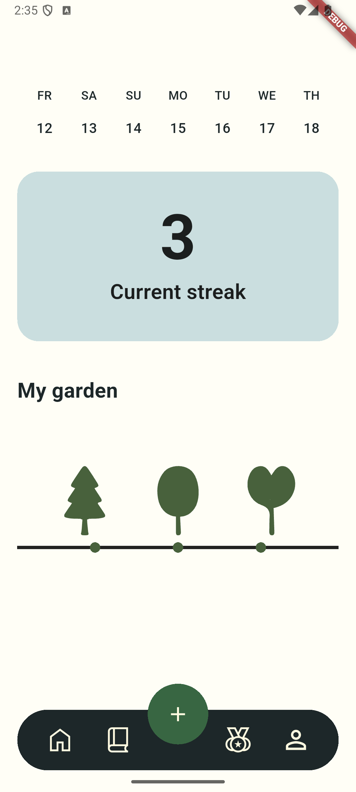

Rapid Development Sprints:
Olive & Folio
The Brief
These two mobile apps were created during short, focused development sprints. The constraint was to move from a clear user problem to a functional MVP quickly, while still making deliberate design and technical decisions.


Olive
Olive helps students find quick, affordable and nutritious meal inspiration. Research showed that students often spend too long deciding what to cook, while recipes are scattered across social platforms and difficult to save or revisit.
- Swipe-based discovery for fast decision-making
- Clear recipe information instead of incomplete social posts
- A visual-first interface for low-effort browsing

Folio
Folio makes it easier for students to capture and organise evidence for their academic portfolios. Interviews showed that evidence is often fragmented across screenshots, notes and folders, creating repetitive work later.
- Capture work close to the moment it happens
- Tag evidence to projects and learning outcomes
- Use prompts and structure to support reflection

Outcome
Both apps resulted in functional Flutter prototypes. Working under tight deadlines improved my ability to prioritise an MVP, test ideas quickly and make design decisions that could be implemented within the sprint.
The projects gave me practical experience connecting user research, interface design and front-end development in a collaborative Git workflow.